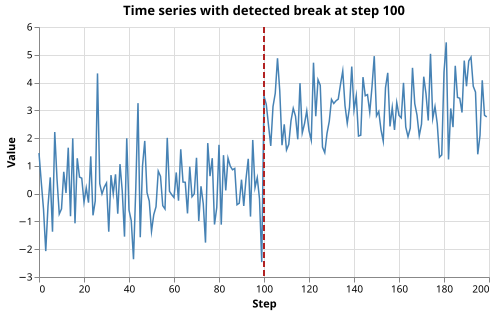
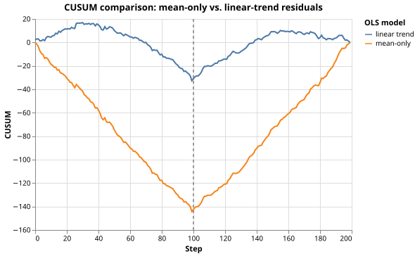

32 Structural Break Detection in Economic Time Series
32.1 The Problem
- An economic indicator like inflation can shift abruptly when policy changes or a crisis hits
- A structural break is a point in time where the statistical properties of the series change permanently
- Failing to account for a break leads to biased forecasts and spurious inference
- A model fitted over a period that straddles a break conflates two different regimes
- Our approach:
- Generate a synthetic time series with a known break at a known step
- Subtract the sample mean from each observation to get residuals, then compute the cumulative sum statistic (CUSUM) of those residuals
- Detect the break as the location of the largest absolute CUSUM value
Why does a structural break cause the CUSUM of OLS residuals to deviate from zero?
- The OLS residuals are always zero after fitting.
- Wrong: OLS minimises the sum of squared residuals, but residuals are generally non-zero for individual observations.
Residuals on one side of the break have a consistent sign, so their cumulative sum drifts systematically rather than fluctuating around zero. : Correct: the OLS fit uses a single set of parameters for the whole series; where the true mean differs from the fitted mean, residuals are biased in one direction.
- The CUSUM is defined as the sum of squared residuals, which grows with the break size.
- Wrong: CUSUM is the cumulative sum of residuals (not squared), so it can go negative as well as positive.
- A break always makes the residuals larger in absolute value, raising the CUSUM.
- Wrong: absolute size alone does not cause drift; it is the consistent sign that produces the characteristic V-shape.
32.2 The CUSUM Statistic
- Given a time series \(y_0, \ldots, y_{T-1}\) and a fitted model with residuals \(\hat{e}_t = y_t - \hat{y}_t\), the cumulative sum (CUSUM) at step \(t\) is:
\[C_t = \sum_{s=0}^{t} \hat{e}_s\]
- Before a break, residuals share one systematic sign (i.e., the global fit is wrong in one direction)
- After the break they flip, so \(C_t\) first drifts away from zero and then turns back
- The break is detected at the index of maximum absolute deviation:
\[\hat{\tau} = \mathop{\arg\max}_{t} |C_t|\]
- Because detect_break returns the last index before the estimated break, the estimated break location in terms of steps is \(\hat{\tau} + 1\)
32.3 Generating Synthetic Data
- The series has a single abrupt break at step 100: the mean shifts from 0.0 to 3.0, a change of three standard deviations (\(\sigma = 1.0\))
- This signal-to-noise ratio of 3 gives reliable detection with 200 observations while still leaving visible scatter in the plots
32.4 Mean-Only Residuals and CUSUM
- Subtract the sample mean from each observation: \(\hat{e}_t = y_t - \bar{y}\)
- If there is no break, these residuals fluctuate randomly around zero with no consistent pattern
- If there is a break, residuals before the break have one consistent sign and residuals after have the opposite sign
- The global mean sits between the two local means, so it over-estimates one half and under-estimates the other
- This sign reversal produces the characteristic V-shape in \(C_t\)
- The CUSUM drifts in one direction before the break and reverses after
- The peak marks the break
32.5 Linear-Trend Residuals and CUSUM
- If the series also has a linear trend, subtracting only the mean conflates the trend with the break
- The CUSUM responds to both
- Instead, subtract the line of best fit found by
np.polyfitwith \(\hat{e}_t = y_t - (a + bt)\), where \(a\) and \(b\) are chosen to minimise the sum of squared differences from the data - The CUSUM of these trend residuals responds only to departures from the fitted line, such as a sudden mean shift
- A break that also changes the trend is harder to see in mean residuals but visible in trend residuals
- When the series has no trend (as in the synthetic data here) both models should detect the same break (which they do)
- When a trend is present the linear-trend approach is the appropriate choice
- Applying the mean-only approach to a trending series produces a spurious signal at the point where the trend, not a break, drives the largest cumulative deviation
A time series has GDP values that grow at roughly 2% per year with no sudden shift. Which CUSUM model is more appropriate?
- Mean-only, because GDP is always measured as a level.
- Wrong: a mean-only model applied to a trending series will produce a large CUSUM signal driven by the trend, not any break.
- Linear-trend, because removing the trend first isolates departures from the trend.
- Correct: the OLS detrending step removes the 2% annual growth so the CUSUM responds only to unexpected deviations.
- Neither; CUSUM requires a stationary series before any fitting.
- Wrong: CUSUM can be applied after any OLS fit; the choice of fit determines what kind of departure the CUSUM detects.
- Mean-only, but only if the trend is very small.
- Wrong: even a modest trend, cumulated over many steps, will dominate the CUSUM and make break detection unreliable.
32.6 Plotting


32.7 Testing
- CUSUM of zero residuals
- If all residuals are zero the CUSUM is identically zero. This confirms the function is a pure cumulative sum with no hidden offset.
- CUSUM matches
np.cumsum -
CUSUM is defined as the cumulative sum of residuals, so it must match
np.cumsumon the same array exactly. Any discrepancy would indicate an indexing bug. - Residuals sum to zero
-
For both the mean-only and linear-trend fits, residuals must sum to zero. Subtracting the sample mean centers the data exactly;
np.polyfitwith an intercept term also centers the residuals. A failure would indicate an error in the subtraction or fitting step. - Clean-signal break detection
-
With no noise, a 0-to-3 step function has residuals of \(-1.5\) before the break and \(+1.5\) after. The CUSUM decreases at rate 1.5 for 100 steps (reaching \(-150\)), then increases at rate 1.5 for 100 steps (returning to 0). The maximum absolute value is at index 99, so
detect_breakmust return 99. - Noisy detection within ten steps
- With seed 7493418 and signal-to-noise ratio 3, the estimated break location (\(\hat{\tau} + 1\)) must be within 10 steps of the true break at step 100. The tolerance of 10 is roughly \(3\sigma / \sqrt{n} \approx 0.07\) of the series length, which is a generous margin given the high signal-to-noise ratio (SNR).
import numpy as np
import pytest
from generate_breakpoint import make_breakpoint_data, BREAK_STEP, N_STEPS
from breakpoint import residuals_mean, residuals_trend, cusum, detect_break
def test_cusum_all_zero_residuals():
# The CUSUM of a zero-residual sequence is identically zero.
assert np.all(cusum(np.zeros(50)) == 0.0)
def test_cusum_matches_cumsum():
# By definition CUSUM must equal numpy's cumsum on the same array.
residuals = np.array([1.0, -2.0, 3.0, -0.5, 0.5])
np.testing.assert_array_equal(cusum(residuals), np.cumsum(residuals))
def test_mean_residuals_sum_to_zero():
# OLS residuals from a mean-only fit sum to zero because the least-squares
# intercept equals the sample mean, centering the residuals exactly.
df = make_breakpoint_data()
values = df["value"].to_numpy()
assert np.sum(residuals_mean(values)) == pytest.approx(0.0, abs=1e-10)
def test_trend_residuals_sum_to_zero():
# OLS with an intercept always centers the residuals, so they also sum to
# zero for the linear-trend fit.
df = make_breakpoint_data()
values = df["value"].to_numpy()
assert np.sum(residuals_trend(values)) == pytest.approx(0.0, abs=1e-10)
def test_detect_break_clean_signal():
# With no noise the CUSUM of mean-only residuals reaches its maximum
# absolute value at index BREAK_STEP - 1 (the last step before the break),
# because the cumulative deficit reaches its deepest point exactly there.
values = np.concatenate(
[
np.zeros(BREAK_STEP),
3.0 * np.ones(N_STEPS - BREAK_STEP),
]
)
detected = detect_break(cusum(residuals_mean(values)))
assert detected == BREAK_STEP - 1
def test_detect_break_noisy_within_ten_steps():
# With seed 7493418 and a signal-to-noise ratio of 3 (mean shift 3.0,
# noise std 1.0), the detected break must be within 10 steps of the
# true break. detect_break returns the last index before the break,
# so the estimated break location is detected + 1.
df = make_breakpoint_data()
values = df["value"].to_numpy()
detected = detect_break(cusum(residuals_mean(values)))
assert abs((detected + 1) - BREAK_STEP) <= 10Structural break detection key terms
- Structural break
- A point in time at which the statistical properties of a time series (mean, variance, trend) change abruptly and permanently; also called a regime change or change point
- CUSUM statistic \(C_t\)
- \(\sum_{s=0}^{t} \hat{e}_s\); cumulative sum of residuals; drifts systematically when the fitted model is wrong on one side of a break
- Mean-only residuals
- \(\hat{e}_t = y_t - \bar{y}\); appropriate when the series is stationary around a constant mean; confounds trend and break if a trend is present
- Linear-trend residuals
-
\(\hat{e}_t = y_t - (a + bt)\) where \(a\) and \(b\) are found by
np.polyfit; removes a fitted linear drift before forming the CUSUM; appropriate when the series has a deterministic trend - Break detection rule
- \(\hat{\tau} = \arg\max_t |C_t|\); the last index before the estimated break; the estimated break location is \(\hat{\tau} + 1\)
32.8 Exercises
32.8.1 Do the math
A noise-free series has value 0 for steps 0-99 and value 3 for steps 100-199. The global mean is 1.5. At which step index (0-based) does \(|C_t|\) reach its maximum?
32.8.2 Two break points
Modify make_breakpoint_data to introduce a second break: the mean shifts from 0.0 to 3.0 at step 60 and then from 3.0 to 1.0 at step 140. Plot the CUSUM of the mean-only residuals and explain why the statistic now shows two local extrema. Does detect_break find the larger or smaller break?
32.8.3 Effect of signal-to-noise ratio
Run the detection algorithm for five signal-to-noise ratios ($/ = $ 0.5, 1, 2, 3, 5) while keeping all other parameters fixed. For each ratio, report the detected break location and its distance from the true break. At what SNR does reliable detection (within 5 steps) become consistent across different random seeds?
32.8.4 Trend with a break
Generate a series with a linear trend (\(b = 0.05\) per step) and a mean break at step 100. Apply both the mean-only and linear-trend CUSUM and compare the detected break locations. Show that the mean-only CUSUM gives a biased estimate when a trend is present.
32.8.5 Scaled CUSUM and critical values
The raw CUSUM is not scale-invariant: a larger noise standard deviation produces larger CUSUM values even with no break. Normalise the CUSUM by dividing by \(\hat{\sigma}\sqrt{T}\) where \(\hat{\sigma}\) is the residual standard error and \(T\) is the series length. The scaled statistic exceeds 1.36 with probability 5% under the null hypothesis of no break (Brown-Durbin-Evans critical value). Apply this threshold to the synthetic data and report whether the break is detected at the 5% level.